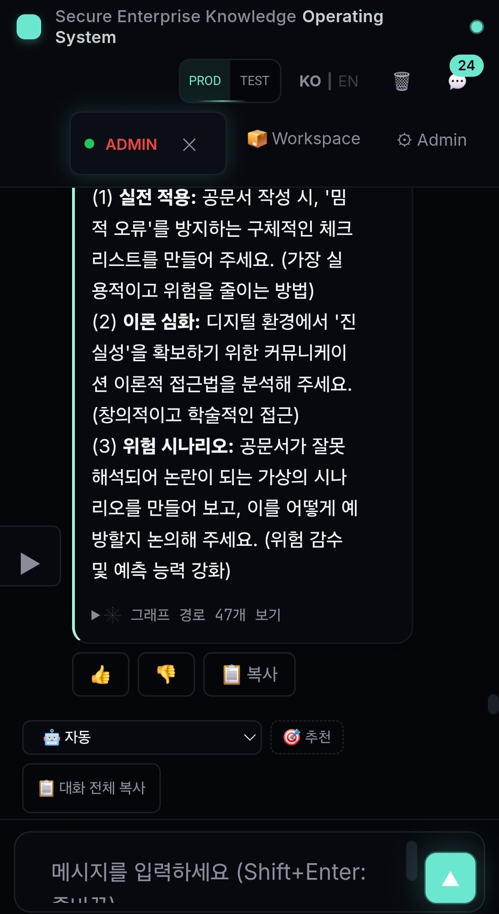
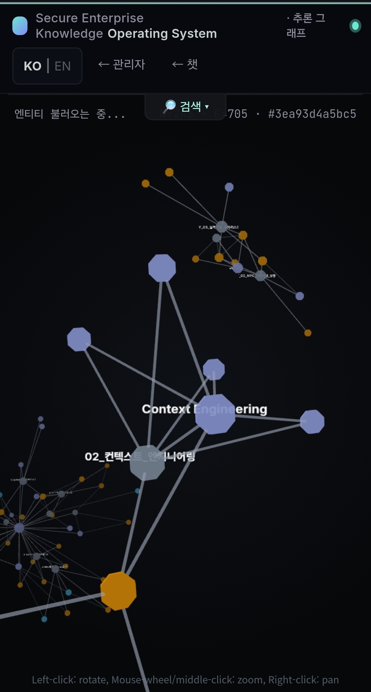
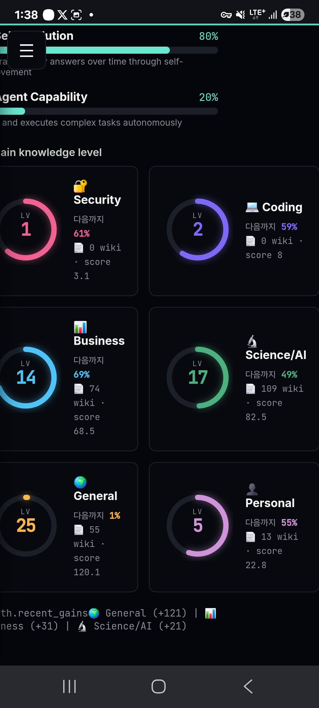

내 컴퓨터 안에 사는 '믿을 수 있는 AI 두뇌'
근거를 손가락으로 짚어주고, 사람이 승인해야만 바뀌며, 내 자료를 절대 밖으로 내보내지 않는 AI.
한 문장으로: 내 컴퓨터 안에서만 일하는, 입이 무거운 도서관 사서.
📚 내가 준 책(PDF·문서·사진)을 전부 읽고 기억해요. 질문하면 답을 주는데, "몇 번째 책 몇 페이지에서 봤는지"까지 짚어줘요. 그리고 그 책들을 절대 밖으로 안 가져나가요.
docs/ARCHITECTURE.md §1). 설계 원칙 8가지 중 1번 Local-first, 2번 Evidence-based reasoning, 5번 Human-supervised evolution.
ERP·회계·예약 같은 시스템을 대체하지 않고 그 위에 얹는 분석/검색/정책 레이어(§2 Non-goals).
🗣️ 보통 챗봇 — "어디서 들었는진 모르지만 그냥 술술 말함" (가끔 지어냄).
👉 자메스 — "이 답은 3번 문서 + 그래프 47개 경로에서 나왔어"라고 손가락으로 짚어줌.
trace_id 하나로 전 과정 재생
audit_bridge에 1행씩 기록,
"왜 X라고 답했나?"를 사후에 재구성 가능 (scripts/replay_trace.py <trace_id>, ARCHITECTURE §5.7.2).
RAGAS 측정값: faithfulness(근거 충실도) 1.000, context_precision/recall 1.000 (eval/RESULTS.md).
core/{retrieval,graph,reasoning}를 건드리는 PR은
벤치 수치 없이는 머지 불가(CLAUDE.md 규칙 #2). README "What's Different" 6항목과 일치.
🚦 공항 보안검색처럼, 질문 → 답까지 줄줄이 검문소를 통과해요. 각 검문소는 자기 일을 하고 기록을 남겨요. 그래서 나중에 "왜 이렇게 답했지?"를 전부 되감기할 수 있어요.
검색은 벡터 60% + BM25 20% + 키워드 10% + 이름 10%를 섞은 하이브리드. 형식 질의어(SQL/SPARQL)로 번역하지 않고 자연어 그대로 흐릅니다.
README.md "Architecture" + docs/ARCHITECTURE.md §5.7.
모든 단계가 하나의 trace_id로 1행씩 기록되어 전 과정 재구성 가능(trace-replay invariant).
재정렬기(cross-encoder MiniLM)는 v0.3 기본 ON.
🎫 손님마다 "어느 책장까지 들어갈 수 있는지" 출입증이 달라요. 나쁜 쪽지(해킹 명령)가 책 속에 숨어 들어와도, "명령은 빼고 내용만" 걸러서 읽어요.
PolicyEngine(core/policy_engine.py) 하나가 모든 권한 결정의 단일 출처.
done-when 기준: 이 파일을 지우면 6개 이상 모듈이 import 실패(v0.2 Axis 4 완료). 위협모델 T1–T10 매핑, R1–R8 코드 인용 완비.

🧩 지식 조각마다 "이건 어느 책에서 나왔어" 꼬리표가 붙어요. 그래서 책 한 권을 빼면 그 책에서 나온 지식만 콕 집어 지우거나 고쳐요. 나머지는 그대로!
sources:[{doc_id,weight,role,ts}]wiki.pre-v03-migration/. 불변식 12개를 tests/test_relations_schema.py에 락. 결함 포스트모템까지 문서화.
🌱 자메스가 "이렇게 바꾸면 더 똑똑해져요!"라고 제안서를 내요. 하지만 선생님(사람)이 OK 도장을 찍어야만 진짜로 바뀌어요. 바꾼 뒤 성적이 떨어지면 자동으로 되돌려요.

JAMES_ENABLE_EVOLUTION=0),
승인은 적용 전에 기록(R2/R5), 벤치 회귀 시 자동 롤백(v0.2 Axis 5 완료). 5-역할 멀티에이전트 상한(anti-sprawl)으로 무분별 확장 차단.
SECURITY.md).
stars 13은 임계값(1,000)의 약 1.3%. 즉 "엔지니어링은 탄탄, 채택은 이제 시작" 단계.
📝 AI가 그대로 베껴 답할 때(substitution)는 매번 똑같이, 아주 빠르게(0.8초) 나와요. 하지만 새로 생각해서 답할 때(synthesis)는 5배 느리고 매번 달라져요. 이 '비용의 비대칭'을 숫자로 측정했어요.
1/20 unique (샘플링 통과)reports/promo-assets/v3prime-e-substitution-synthesis-result.md + reports/research-runs/*.json.
재현: python scripts/research/v3prime_e_mode_split.py --n 20. 3축 확립 — ①모드 분리 ②작업무게 그래디언트(7단계 단조증가, 27× 동적범위) ③모델규모 효율(파라미터↑ → 추론 라우팅 정밀도↑).
🏗️ 기초공사(v0.1) → 기초 다지기(v0.2) → 집 뼈대 세우기(v0.3, 지금!) → 방 설계(v0.4) → 첫 입주자(v0.5) → 누구나 증축 가능한 완성 주택(v1.0)
ROADMAP.md + docs/PLATFORM_READINESS.md. 각 단계는 "다음 게이트 통과 전에는 다음 분화 금지"라는 규율로 묶임.
v0.4는 원래 도메인 파일럿이었으나, v0.3 cascade가 드러낸 governance 공백 때문에 Layer 4(수명주기)로 재타깃, 파일럿은 v0.5로 이동(2026-05-22 결정).
🌳 법률·카페·여행·유통은 가지(도메인 팩)예요. 그런데 어미 나무가 튼튼해지기 전에 가지를 뻗으면 나무 전체가 휘어버려요. 그래서 v1.0까지는 가지 없이 줄기만 키워요.
"가지를 먼저 뻗고 싶은 유혹"이 이 프로젝트의 가장 큰 위험이라고 문서에 못 박아둠.
6차원이 모두 임계치를 넘어야 도메인 분화가 '안전'.
docs/PLATFORM_READINESS.md 6차원 + 4게이트. 분화 형태 3종: Domain Pack(VS Code 확장급) → Distribution(리눅스 배포판급) → Vertical Product(WordPress.com급).
비즈니스 트랙: 카페 도메인 1개 우선, 6개월 운영 전엔 두 번째 도메인 금지(v0.2.1-business-track.md §3).
전환 트리거 T1–T5 — stars≥1,000 · 상용문의 분기 3건+ · 클로닝 발생 · 매출계획 확정 · enterprise PoC. 2개 이상 충족 시에만 라이선스 재논의.
엘라스틱·해시코프·몽고DB·센트리 모두 permissive로 시작 후 스타 수만 개 + 클로닝 손해가 실제 발생한 뒤에야 강화 전환. 처음부터 BUSL/AGPL로 시작한 곳은 대부분 채택 0.
docs/LICENSE_PLAN.md §6/§7. 특허·상표 모두 아직 출원 진행 0 (계획·후보 식별 단계) — 변리사 자문 일정 잡기가 미진행 액션.
Defensive Patent Pledge(Tesla 모델)도 검토 항목. 현재 라이선스 트리거 충족 0/5.
엔지니어링 토대는 강하지만, '상업적 가치'까지는 솔직히 빈칸이 많습니다. 가진 것(✓)과 필요한 것(△)을 나눠봤어요.
/feedback)도 미설치.ROADMAP.md v1.0 deliverables + PLATFORM_READINESS.md Gate v1.0과 정확히 일치.
자본 경로(공개 요약): 예비창업패키지(비희석) → 카페 PoC → 시드 → Series A (v0.2.1-business-track.md §4). 구체 영업·재무는 비공개 노트.
🧠 병원·법무팀·카페 본사·여행사가 각자 자기 컴퓨터 안에 자메스 두뇌를 두고, 필요한 '가지(도메인 팩)'만 끼워 쓰는 세상. 클라우드에 비밀을 안 맡겨도 되는 AI.
PLATFORM_READINESS.md §4.
타깃 교집합: 로컬/온프렘 전용 + 멀티도메인 누적 + 한국어 우선. "작지만 실재하는 시장"으로 정의.
"근거를 보여주고, 사람이 책임지고, 내 컴퓨터 안에서만 도는 AI 두뇌."
docs/PLATFORM_READINESS.md · docs/ARCHITECTURE.md · ROADMAP.md ·
docs/security/ASSURANCE_CASE.md · docs/LICENSE_PLAN.md. 발표자료 자체도 자메스 철학대로 인터넷 없이 동작하는 단일 파일.